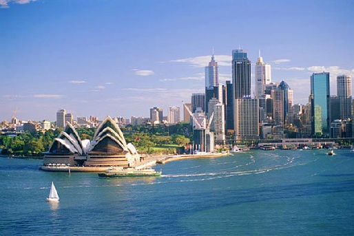
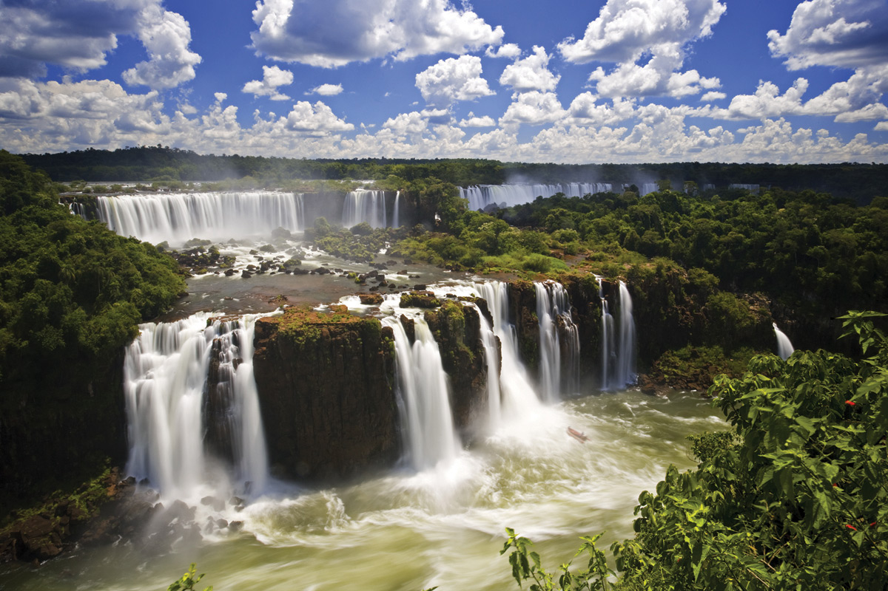
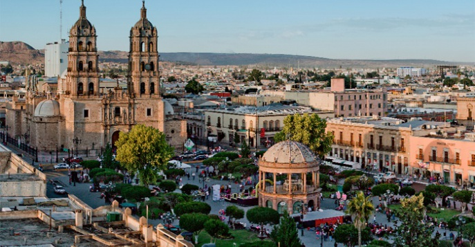

Картика с заданными размерами
Картика с произвольными размерами
Картика только с высотой
Картика по центру без высоты
История Аргентины, как и многих других стран южноамериканского континента, напрямую связана с Испанией и процессом колонизации. Однако, как ни странно, первыми на этих землях оказались португальцы. В 1502 году экспедиция португальцев, в которой принимал участие сам Америго Веспуччи, открыла эстуарий, образованный слиянием рек Уругвай и Парана до Атлантического океана и поучивший название Rio de la Plata, что означает серебряная река. И только в 1535 году испанский конкистадор Педро де Мендоса основал форт Санта Мария дель Буэн Айре, ставший впоследствии столицей современной Аргентины. Захваченные и колонизированные испанцами территории в этом районе, получили название Вице-королевства Рио-де-Ла-Плата, которое включало территорию современного Уругвая, Парагвая, частично Боливии и северные и центральные земли современной Аргентины. В результате разгрома британских войск и революционного буржуазного движения в 1810 году были образованы Объединённые провинции Рио-де-Ла-Плата, а Вице-Королевство было распущено. 9 июля 1816 года была провозглашена независимость страны от Испании и создание Объединённых Провинций Южной Америки. Огромная заслуга в процессе борьбы за независимость Аргентины принадлежит генералу Хосе-де-Сан-Мартину, возглавившему армию и одержавшему победу над испанцами. В 20-ые годы 19 века Аргентина вела войну с Бразилией по поводу территориальных споров за Уругвай. В результате этого конфликта Уругвай отделился от Аргентины и стал независимым государством. В 1833 году Великобритания заняла Мальвинские острова, которые Аргентина рассматривала как часть провинции Огненная Земля. Права Великобритании на эти острова оспариваются Аргентиной и по сей день. В 1853 году принята первая Конституция Аргентины, вслед за чем последовал военный конфликт с провинцией Буэнос-Айрес, стремившейся к независимости. В результате провинция Буэнос-Айрес вошла в состав государства, а город Буэнос-Айрес стал столицей нового государства. На протяжении всего 19 века Аргентину сотрясали войны и конфликты. И лишь начиная с 1880 года начинается взлёт и золотой период в жизни Аргентины, сумевшей добиться серьёзных экономических и социальных успехов. В начале 20 века на буме животноводства и земледелия Аргентина превратилась в одну из самых богатых и процветающих стран мира. Большой вклад в развитие страны оказали миллионы европейцев, привлеченные большими возможностями этой богатой страны Нового Света. В те годы слава об экономическом чуде Аргентины гремела по всему миру. Стабильность и процветание в стране были нарушены в 1930 году, когда произошёл военный переворот. Важная страница истории страны связана с правлением в сороковые и пятидесятые годы президента Перона и его супруги Эвы, пользовавшихся огромной популярностью среди народа. Перон дважды избирался президентом страны и вместе со своей популярной супругой проводил жёсткие экономические реформы. За свержением Перона в 1955 году последовал его новый взлёт, когда в 1973 году в результате смены ряда военных правительств он вновь вернулся к власти. После его смерти в 1974 году в жизни аргентинцев наступает мрачный период — революционно настроенные элементы развязали в стране волну террора, вылившейся в военный переворот в 1976 году. Тысячи аргентинцев были убиты и объявлены пропавшими без вести.  Восьмидесятые годы характеризуются сменой демократических правительств, девяностые — развитием демократических свобод. В начале двухтысячных неумелое руководство и как результат слишком открытая экономика, резкая либерализация режима иностранных инвестиций привели страну к техническому дефолту и девальвации национальной валюты. Сумма государственного долга на тот момент составляла 132 миллиарда долларов, что сделало аргентинский дефолт крупнейшим в мировой истории. Безработица, массовые беспорядки и погромы характеризуют жизнь Аргентины в этот период кризиса. Сегодня по своему составу Аргентина является федеративной республикой, разделённой на 23 провинции и 1 федеральный столичный округ. Президентом страны с 2007 года является Кристина Фернандес де Киршнер, вдова предыдущего президента Нестора Киршнера. Неумелое руководство страной, разгул коррупции, воровство, безработица, беспорядки и недовольства — вот только некоторые составляющие правления нынешнего руководства Аргентины.
История Аргентины, как и многих других стран южноамериканского континента, напрямую связана с Испанией и процессом колонизации. Однако, как ни странно, первыми на этих землях оказались португальцы. В 1502 году экспедиция португальцев, в которой принимал участие сам Америго Веспуччи, открыла эстуарий, образованный слиянием рек Уругвай и Парана до Атлантического океана и поучивший название Rio de la Plata, что означает серебряная река. И только в 1535 году испанский конкистадор Педро де Мендоса основал форт Санта Мария дель Буэн Айре, ставший впоследствии столицей современной Аргентины. Захваченные и колонизированные испанцами территории в этом районе, получили название Вице-королевства Рио-де-Ла-Плата, которое включало территорию современного Уругвая, Парагвая, частично Боливии и северные и центральные земли современной Аргентины. В результате разгрома британских войск и революционного буржуазного движения в 1810 году были образованы Объединённые провинции Рио-де-Ла-Плата, а Вице-Королевство было распущено. 9 июля 1816 года была провозглашена независимость страны от Испании и создание Объединённых Провинций Южной Америки. Огромная заслуга в процессе борьбы за независимость Аргентины принадлежит генералу Хосе-де-Сан-Мартину, возглавившему армию и одержавшему победу над испанцами. В 20-ые годы 19 века Аргентина вела войну с Бразилией по поводу территориальных споров за Уругвай. В результате этого конфликта Уругвай отделился от Аргентины и стал независимым государством. В 1833 году Великобритания заняла Мальвинские острова, которые Аргентина рассматривала как часть провинции Огненная Земля. Права Великобритании на эти острова оспариваются Аргентиной и по сей день. В 1853 году принята первая Конституция Аргентины, вслед за чем последовал военный конфликт с провинцией Буэнос-Айрес, стремившейся к независимости. В результате провинция Буэнос-Айрес вошла в состав государства, а город Буэнос-Айрес стал столицей нового государства. На протяжении всего 19 века Аргентину сотрясали войны и конфликты. И лишь начиная с 1880 года начинается взлёт и золотой период в жизни Аргентины, сумевшей добиться серьёзных экономических и социальных успехов. В начале 20 века на буме животноводства и земледелия Аргентина превратилась в одну из самых богатых и процветающих стран мира. Большой вклад в развитие страны оказали миллионы европейцев, привлеченные большими возможностями этой богатой страны Нового Света. В те годы слава об экономическом чуде Аргентины гремела по всему миру. Стабильность и процветание в стране были нарушены в 1930 году, когда произошёл военный переворот. Важная страница истории страны связана с правлением в сороковые и пятидесятые годы президента Перона и его супруги Эвы, пользовавшихся огромной популярностью среди народа. Перон дважды избирался президентом страны и вместе со своей популярной супругой проводил жёсткие экономические реформы. За свержением Перона в 1955 году последовал его новый взлёт, когда в 1973 году в результате смены ряда военных правительств он вновь вернулся к власти. После его смерти в 1974 году в жизни аргентинцев наступает мрачный период — революционно настроенные элементы развязали в стране волну террора, вылившейся в военный переворот в 1976 году. Тысячи аргентинцев были убиты и объявлены пропавшими без вести. Восьмидесятые годы характеризуются сменой демократических правительств, девяностые — развитием демократических свобод. В начале двухтысячных неумелое руководство и как результат слишком открытая экономика, резкая либерализация режима иностранных инвестиций привели страну к техническому дефолту и девальвации национальной валюты. Сумма государственного долга на тот момент составляла 132 миллиарда долларов, что сделало аргентинский дефолт крупнейшим в мировой истории. Безработица, массовые беспорядки и погромы характеризуют жизнь Аргентины в этот период кризиса. Сегодня по своему составу Аргентина является федеративной республикой, разделённой на 23 провинции и 1 федеральный столичный округ. Президентом страны с 2007 года является Кристина Фернандес де Киршнер, вдова предыдущего президента Нестора Киршнера. Неумелое руководство страной, разгул коррупции, воровство, безработица, беспорядки и недовольства — вот только некоторые составляющие правления нынешнего руководства Аргентины.История Аргентины, как и многих других стран южноамериканского континента, напрямую связана с Испанией и процессом колонизации. Однако, как ни странно, первыми на этих землях оказались португальцы. В 1502 году экспедиция португальцев, в которой принимал участие сам Америго Веспуччи, открыла эстуарий, образованный слиянием рек Уругвай и Парана до Атлантического океана и поучивший название Rio de la Plata, что означает серебряная река. И только в 1535 году испанский конкистадор Педро де Мендоса основал форт Санта Мария дель Буэн Айре, ставший впоследствии столицей современной Аргентины. Захваченные и колонизированные испанцами территории в этом районе, получили название Вице-королевства Рио-де-Ла-Плата, которое включало территорию современного Уругвая, Парагвая, частично Боливии и северные и центральные земли современной Аргентины. В результате разгрома британских войск и революционного буржуазного движения в 1810 году были образованы Объединённые провинции Рио-де-Ла-Плата, а Вице-Королевство было распущено. 9 июля 1816 года была провозглашена независимость страны от Испании и создание Объединённых Провинций Южной Америки. Огромная заслуга в процессе борьбы за независимость Аргентины принадлежит генералу Хосе-де-Сан-Мартину, возглавившему армию и одержавшему победу над испанцами. В 20-ые годы 19 века Аргентина вела войну с Бразилией по поводу территориальных споров за Уругвай. В результате этого конфликта Уругвай отделился от Аргентины и стал независимым государством. В 1833 году Великобритания заняла Мальвинские острова, которые Аргентина рассматривала как часть провинции Огненная Земля. Права Великобритании на эти острова оспариваются Аргентиной и по сей день. В 1853 году принята первая Конституция Аргентины, вслед за чем последовал военный конфликт с провинцией Буэнос-Айрес, стремившейся к независимости. В результате провинция Буэнос-Айрес вошла в состав государства, а город Буэнос-Айрес стал столицей нового государства. На протяжении всего 19 века Аргентину сотрясали войны и конфликты. И лишь начиная с 1880 года начинается взлёт и золотой период в жизни Аргентины, сумевшей добиться серьёзных экономических и социальных успехов. В начале 20 века на буме животноводства и земледелия Аргентина превратилась в одну из самых богатых и процветающих стран мира. Большой вклад в развитие страны оказали миллионы европейцев, привлеченные большими возможностями этой богатой страны Нового Света. В те годы слава об экономическом чуде Аргентины гремела по всему миру. Стабильность и процветание в стране были нарушены в 1930 году, когда произошёл военный переворот. Важная страница истории страны связана с правлением в сороковые и пятидесятые годы президента Перона и его супруги Эвы, пользовавшихся огромной популярностью среди народа. Перон дважды избирался президентом страны и вместе со своей популярной супругой проводил жёсткие экономические реформы. За свержением Перона в 1955 году последовал его новый взлёт, когда в 1973 году в результате смены ряда военных правительств он вновь вернулся к власти. После его смерти в 1974 году в жизни аргентинцев наступает мрачный период — революционно настроенные элементы развязали в стране волну террора, вылившейся в военный переворот в 1976 году. Тысячи аргентинцев были убиты и объявлены пропавшими без вести.
История Аргентины, как и многих других стран южноамериканского континента, напрямую связана с Испанией и процессом колонизации. Однако, как ни странно, первыми на этих землях оказались португальцы. В 1502 году экспедиция португальцев, в которой принимал участие сам Америго Веспуччи, открыла эстуарий, образованный слиянием рек Уругвай и Парана до Атлантического океана и поучивший название Rio de la Plata, что означает серебряная река. И только в 1535 году испанский конкистадор Педро де Мендоса основал форт Санта Мария дель Буэн Айре, ставший впоследствии столицей современной Аргентины. Захваченные и колонизированные испанцами территории в этом районе, получили название Вице-королевства Рио-де-Ла-Плата, которое включало территорию современного Уругвая, Парагвая, частично Боливии и северные и центральные земли современной Аргентины. В результате разгрома британских войск и революционного буржуазного движения в 1810 году были образованы Объединённые провинции Рио-де-Ла-Плата, а Вице-Королевство было распущено. 9 июля 1816 года была провозглашена независимость страны от Испании и создание Объединённых Провинций Южной Америки. Огромная заслуга в процессе борьбы за независимость Аргентины принадлежит генералу Хосе-де-Сан-Мартину, возглавившему армию и одержавшему победу над испанцами. В 20-ые годы 19 века Аргентина вела войну с Бразилией по поводу территориальных споров за Уругвай. В результате этого конфликта Уругвай отделился от Аргентины и стал независимым государством. В 1833 году Великобритания заняла Мальвинские острова, которые Аргентина рассматривала как часть провинции Огненная Земля. Права Великобритании на эти острова оспариваются Аргентиной и по сей день. В 1853 году принята первая Конституция Аргентины, вслед за чем последовал военный конфликт с провинцией Буэнос-Айрес, стремившейся к независимости. В результате провинция Буэнос-Айрес вошла в состав государства, а город Буэнос-Айрес стал столицей нового государства. На протяжении всего 19 века Аргентину сотрясали войны и конфликты. И лишь начиная с 1880 года начинается взлёт и золотой период в жизни Аргентины, сумевшей добиться серьёзных экономических и социальных успехов. В начале 20 века на буме животноводства и земледелия Аргентина превратилась в одну из самых богатых и процветающих стран мира. Большой вклад в развитие страны оказали миллионы европейцев, привлеченные большими возможностями этой богатой страны Нового Света. В те годы слава об экономическом чуде Аргентины гремела по всему миру. Стабильность и процветание в стране были нарушены в 1930 году, когда произошёл военный переворот. Важная страница истории страны связана с правлением в сороковые и пятидесятые годы президента Перона и его супруги Эвы, пользовавшихся огромной популярностью среди народа. Перон дважды избирался президентом страны и вместе со своей популярной супругой проводил жёсткие экономические реформы. За свержением Перона в 1955 году последовал его новый взлёт, когда в 1973 году в результате смены ряда военных правительств он вновь вернулся к власти. После его смерти в 1974 году в жизни аргентинцев наступает мрачный период — революционно настроенные элементы развязали в стране волну террора, вылившейся в военный переворот в 1976 году. Тысячи аргентинцев были убиты и объявлены пропавшими без вести. Восьмидесятые годы характеризуются сменой демократических правительств, девяностые — развитием демократических свобод. В начале двухтысячных неумелое руководство и как результат слишком открытая экономика, резкая либерализация режима иностранных инвестиций привели страну к техническому дефолту и девальвации национальной валюты. Сумма государственного долга на тот момент составляла 132 миллиарда долларов, что сделало аргентинский дефолт крупнейшим в мировой истории. Безработица, массовые беспорядки и погромы характеризуют жизнь Аргентины в этот период кризиса. Сегодня по своему составу Аргентина является федеративной республикой, разделённой на 23 провинции и 1 федеральный столичный округ. Президентом страны с 2007 года является Кристина Фернандес де Киршнер, вдова предыдущего президента Нестора Киршнера. Неумелое руководство страной, разгул коррупции, воровство, безработица, беспорядки и недовольства — вот только некоторые составляющие правления нынешнего руководства Аргентины.История Аргентины, как и многих других стран южноамериканского континента, напрямую связана с Испанией и процессом колонизации. Однако, как ни странно, первыми на этих землях оказались португальцы. В 1502 году экспедиция португальцев, в которой принимал участие сам Америго Веспуччи, открыла эстуарий, образованный слиянием рек Уругвай и Парана до Атлантического океана и поучивший название Rio de la Plata, что означает серебряная река. И только в 1535 году испанский конкистадор Педро де Мендоса основал форт Санта Мария дель Буэн Айре, ставший впоследствии столицей современной Аргентины. Захваченные и колонизированные испанцами территории в этом районе, получили название Вице-королевства Рио-де-Ла-Плата, которое включало территорию современного Уругвая, Парагвая, частично Боливии и северные и центральные земли современной Аргентины. В результате разгрома британских войск и революционного буржуазного движения в 1810 году были образованы Объединённые провинции Рио-де-Ла-Плата, а Вице-Королевство было распущено. 9 июля 1816 года была провозглашена независимость страны от Испании и создание Объединённых Провинций Южной Америки. Огромная заслуга в процессе борьбы за независимость Аргентины принадлежит генералу Хосе-де-Сан-Мартину, возглавившему армию и одержавшему победу над испанцами. В 20-ые годы 19 века Аргентина вела войну с Бразилией по поводу территориальных споров за Уругвай. В результате этого конфликта Уругвай отделился от Аргентины и стал независимым государством. В 1833 году Великобритания заняла Мальвинские острова, которые Аргентина рассматривала как часть провинции Огненная Земля. Права Великобритании на эти острова оспариваются Аргентиной и по сей день. В 1853 году принята первая Конституция Аргентины, вслед за чем последовал военный конфликт с провинцией Буэнос-Айрес, стремившейся к независимости. В результате провинция Буэнос-Айрес вошла в состав государства, а город Буэнос-Айрес стал столицей нового государства. На протяжении всего 19 века Аргентину сотрясали войны и конфликты. И лишь начиная с 1880 года начинается взлёт и золотой период в жизни Аргентины, сумевшей добиться серьёзных экономических и социальных успехов. В начале 20 века на буме животноводства и земледелия Аргентина превратилась в одну из самых богатых и процветающих стран мира. Большой вклад в развитие страны оказали миллионы европейцев, привлеченные большими возможностями этой богатой страны Нового Света. В те годы слава об экономическом чуде Аргентины гремела по всему миру. Стабильность и процветание в стране были нарушены в 1930 году, когда произошёл военный переворот. Важная страница истории страны связана с правлением в сороковые и пятидесятые годы президента Перона и его супруги Эвы, пользовавшихся огромной популярностью среди народа. Перон дважды избирался президентом страны и вместе со своей популярной супругой проводил жёсткие экономические реформы. За свержением Перона в 1955 году последовал его новый взлёт, когда в 1973 году в результате смены ряда военных правительств он вновь вернулся к власти. После его смерти в 1974 году в жизни аргентинцев наступает мрачный период — революционно настроенные элементы развязали в стране волну террора, вылившейся в военный переворот в 1976 году. Тысячи аргентинцев были убиты и объявлены пропавшими без вести.